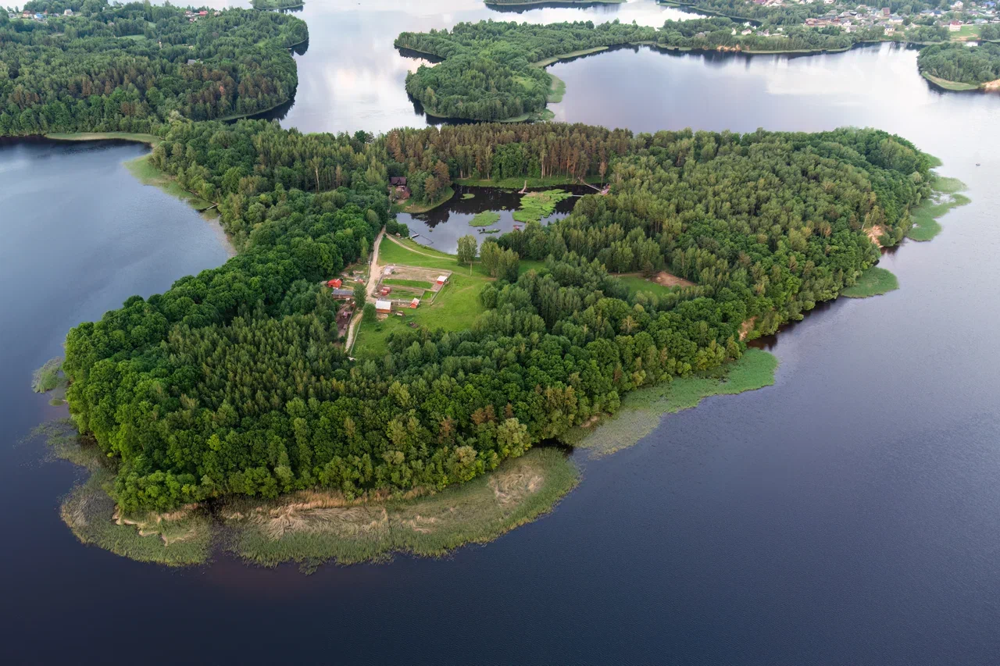
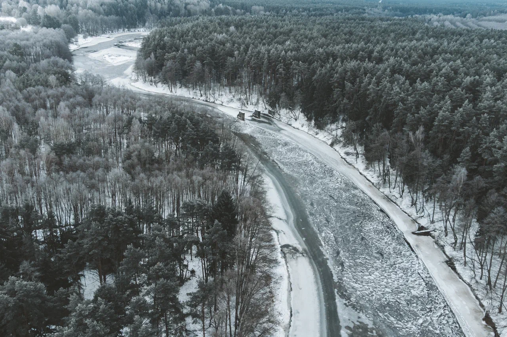
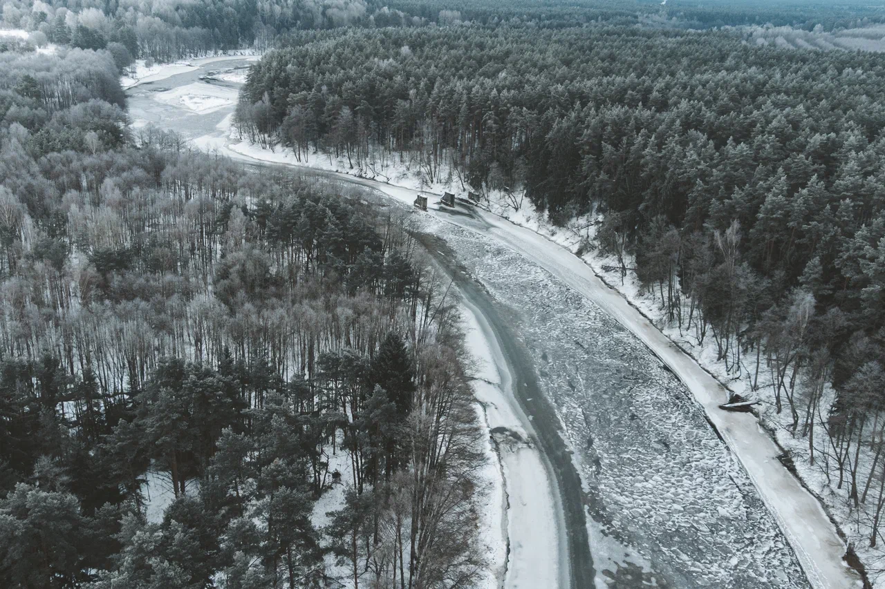

Краіна, якая вабіць і назаўседы застаецца ў вашым сэрцы.

Беларусь сінявокая
Чым ганарыцца Беларусь?
Беларусь - гэта краіна са старажытнай гісторыяй і багатымі традыцыямі, з цудоўнай прыродай
і дзіўнай архітэктурай, якая спалучае ў сабе спадчыну заходнееўрапейскіх і ўсходнеславянскіх
традыцый дойлідства. Беларусь славіцца сваімі лясамі і азёрамі - нездарма яе называюць «лёгкія Еўропы».
Беларусь – гэта шырокія светлыя праспекты і вузкія брукаваныя вулачкі, каталіцкія касцёлы і праваслаўныя саборы,
велічныя замкі і драўляныя хаты ў вёсках, сытная і смачная нацыянальная кухня.
Як сведчаць звесткі апытання, 48% рэспандэнтаў праводзяць водпуск у Беларусі:
часцей за ўсё праводзяць водпуск у Мінску, Брэсце, Баранавічах, Слуцку і каля возера Нарач.
Белавежская пуща прадстаўляе сабой адзін з найбуйнейшых лясных масіваў раўніннай
Еўропы, які захаваўся да нашых дзён у адносна непарушаным стане.
На думку навукоўцаў, Белавежская пушча — астатак першабытнага рэліктавага лесу.
Цяпер ён займае тэрыторыю каля 160 тысяч гектараў. Захаваліся рэдкія скальныя дубы і
адзіная ў Еўропе натуральная папуляцыя піхты белай. Сустракаюцца дрэвы-волаты,
якім 400-600 год. Белавежская пушча — гэта жамчужына ў сусветнай скарбніцы.
Тут можна атрымаць асалоду ад звышнатуральнай цішыні старажытнага лесу, прагуляцца
ўздоўж каскаду азёр і па берагах рэк.
Нарачанскі край – унікальная прыродная скарбніца і буйнейшы курортны рэгіён Беларусі. Маляўнічыя пейзажы,
чыстыя азёры і рэкі, гаючыя мінеральныя крыніцы прывабліваюць сюды гасцей з усяго свету.
Нацыянальны парк "Нарачанскі" размешчаны на паўночным захадзе краіны і з’яўляецца часткай Беларускага
Паазер’я. У межах нацыянальнага парку размешчаны 43 возеры. Амаль 48% тэрыторыі парку пакрыта хваёвымі
барамі і бярозавымі гаямі. У нацыянальным парку для турыстаў распрацавана
каля 30 экскурсійных маршрутаў, арганізуюцца шматдзённыя пешыя, веласіпедныя і водныя паходы.
На ўзбярэжжы 9 азёр абсталявана 16 турыстычных стаянак.
Некранутая чалавекам прырода ў даліне ракі Прыпяць, унікальныя балоты і пойменныя дубровы,
багатыя радовішчы – усё гэта дзіўны край Палесся, падобнага да якога няма ні толькі ў Еўропе, але і ў свеце.
Сёння Нацыянальны парк "Прыпяцкі" – адна з самых папулярных турыстычных выдатных мясцін Беларусі.
Аматары дзікай прыроды прыязджаюць на захапляючы фотасафары, тут можна ўбачыць сапраўды вялікую
колькасць жывёл у прыродным асяроддзі. Пойма Прыпяці – буйнейшае міграцыйнае рэчышча пералётных птушак у
Еўропе. У Нацыянальным парку "Прыпяцкі" з 2010 года праводзіцца фестываль этнакультурных традыцый "Зоў
Палесся".
У 1995 г. на ўнікальнай прыроднай тэрыторыі Беларускага Паазер'я створаны Нацыянальны парк "Браслаўскія
азёры". Адміністрацыйны цэнтр парку знаходзіцца ў старадаўнім горадзе Браславе, які вырас на ўзгорыстым
перашыйку паміж азёрамі Дрывяты і Навяты.
Нацыянальны парк "Браслаўскія азёры" займае плошчу каля 70 тысяч гектараў. Дзякуючы разнастайнасці экасістэм
(лясы, азёры, лугі, балоты), жывёльны свет парку вельмі багаты. У Нацыянальным парку абсталяваны вальеры
з дзікімі жывёламі, характэрнымі для Беларускага Паазер'я. Аматары пешых прагулак могуць накіравацца
ў маленькае падарожжа па экалагічных сцяжынах. У цёплы сезон па возеры Дрывяты курсіруе прагулачны цеплаход.
Бярэзінскі біясферны запаведнік – жамчужына Беларускага Паазер'я, адна са старэйшых прыродаахоўных
тэрыторый самага высокага рангу ў нашай краіне, якая атрымала сусветную вядомасць як эталон некранутай
прыроды не толькі СНД, але і ўсёй Еўропы.
Асаблівасць запаведніка – суседства адразу 4 тыпаў экасістэм: густых лясоў, рэк, лугоў і гразкай дрыгвы.
Пры гэтым балоты пакрываюць каля 60% тэрыторыі рэзервата, з'яўляючыся часткай бясцэннага прыроднага
багацця Беларусі. Сёння гэта адзінае месца не толькі ў Беларусі, але і ў маштабах усяго кантынента,
якое насяляе знакамітая Вялікая еўрапейская пяцёрка буйных млекакормячых – зубр, мядзведзь, лось, воўк і
рысь: толькі тут можна ўбачыць усіх іх адначасова.
 
